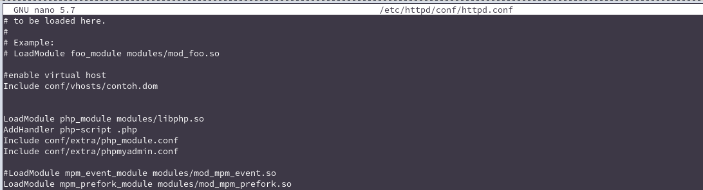

DOCUMENTASI
Dengan mendokumentasikan ilmu dan insight yang saya dapatkan di blog, saya pun dapat belajar, mengulas, dan berbagi secara bersamaan.
Konfigurasi Virtual Host Apache Server Di ArchLinux
Ditulis: 12 Jun 2021Home > Arsip > Konfigurasi Virtual Host Apache Server Di ArchLinux
Arsip
بِسْمِ اللَّهِ الرَّحْمَنِ الرَّحِيم
Istilah Virtual Host mengacu pada praktik menjalankan lebih dari satu situs web (seperti company1.example.com dan company2.example.com) pada satu mesin. Host virtual dapat "berbasis IP", artinya Anda memiliki alamat IP yang berbeda untuk setiap situs web, atau "berbasis nama", artinya Anda memiliki beberapa nama yang berjalan di setiap alamat IP. Fakta bahwa mereka berjalan di server fisik yang sama tidak terlihat oleh pengguna akhir. Apache adalah salah satu server pertama yang mendukung host virtual berbasis IP secara langsung. Apache versi 1.1 dan yang lebih baru mendukung host virtual (vhosts) berbasis IP dan berbasis nama. Varian terakhir dari host virtual kadang-kadang juga disebut host virtual berbasis host atau non-IP.
Konfigurasi
Pertama edit file pada /etc/httpd/conf/httpd.conf :
sudo nano /etc/httpd/conf/httpd.conf
lalu hilangkan tanda pagar pada baris :
Include conf/extra/httpd-vhosts.conf
kemudian Konfigurasi hosts:
sudo /etc/hosts
kemudian buat folder vhosts:
sudo mkdir /etc/httpd/conf/vhosts
selanjutnya buat file pada folder vhosts nama file sesuai nama yang di hosts :
sudo nano /etc/httpd/conf/vhosts/contoh.dom
aktifkan v-host dengan menambahkan pada /etc/httpd/conf/httpd.conf :
Include conf/vhosts/contoh.dom

jika sudah restart httpd:
sudo systemctl restart httpd
Jalankan pada browser http://contoh.dom :
Semoga Bermanfaat.
Referensi
- https://wiki.archlinux.org/title/Apache_HTTP_Server#Virtual_hosts
- https://httpd.apache.org/docs/2.4/vhosts/
Tambahkan komentar anda :
*berkomentar dengan bijak dan sopan.